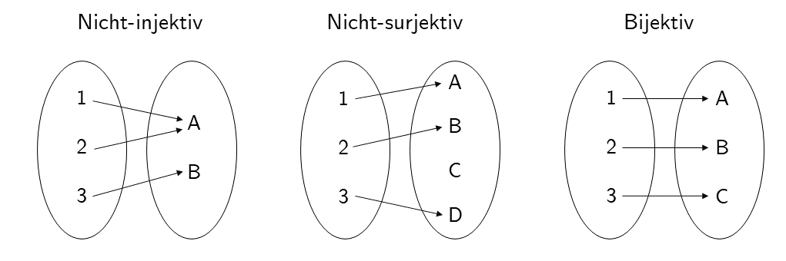

| Name | Funktionale Form | Koeffizienten |
|---|---|---|
| Konstante Funktion | \(f(x) = a\) | \(a_0 := a, a_i := 0, i > 0\) |
| Identitätsfunktion | \(f(x) = x\) | \(a_0 := 0, a_1 := 1, a_i := 0, i > 1\) |
| Linear-affine Funktion | \(f(x) = ax + b\) | \(a_0 := b, a_1 := a, a_i := 0, i > 1\) |
| Quadratfunktion | \(f(x) = x^2\) | \(a_0 := 0, a_1 := 0, a_2 := 1, a_i := 0, i > 2\) |
4 Funktionen
Funktionen bilden zusammen mit den Mengen die Grundpfeiler mathematischer Modellierung. In dieser Einheit definieren wir den Begriff der Funktion, führen erste Eigenschaften von Funktionen ein und geben eine Übersicht über einige elementare Funktionen. Funktionen werden äquivalent auch als Abbildungen bezeichnet.
4.1 Definition und Eigenschaften
Definition 4.1 (Funktion) Eine Funktion oder Abbildung \(f\) ist eine Zuordnungsvorschrift, die jedem Element einer Menge \(D\) genau ein Element einer Zielmenge \(Z\) zuordnet. \(D\) wird dabei Definitionsmenge von \(f\) und \(Z\) wird Zielmenge von \(f\) genannt. Wir schreiben \[\begin{equation} f : D \to Z, x \mapsto f(x), \end{equation}\] wobei \(f : D \to Z\) gelesen wird als “die Funktion \(f\) bildet alle Elemente der Menge \(D\) eindeutig auf Elemente in \(Z\) ab” und \(x \mapsto f(x)\) gelesen wird als “\(x\), welches ein Element von \(D\) ist, wird durch die Funktion \(f\) auf \(f(x)\) abgebildet, wobei \(f(x)\) ein Element von \(Z\) ist”. Der Pfeil \(\to\) steht für die Abbildung zwischen den Mengen \(D\) und \(Z\), der Pfeil \(\mapsto\) steht für die Abbildung zwischen einem Element von \(D\) und einem Element von \(Z\).
Es ist zentral, zwischen der Funktion \(f\) als Zuordnungsvorschrift und einem Wert der Funktion \(f(x)\) als Element von \(Z\) zu unterscheiden. \(x\) ist das Argument der Funktion (der Input der Funktion), \(f(x)\) der Wert, den die Funktion \(f\) für das Argument \(x\) annimmt (der Output der Funktion). Üblicherweise folgt in der Definition einer Funktion \(f(x)\) die Definition der funktionalen Form von \(f\), also einer Regel, wie aus \(x\) der Wert \(f(x)\) zu bilden ist. Zum Beispiel wird in folgender Definition einer Funktion \[\begin{equation} f : \mathbb{R} \to \mathbb{R}_{\ge 0}, x \mapsto f(x) := x^2 \end{equation}\] die Definition der Potenz genutzt.
Funktionen sind immer eindeutig, in dem Sinne dass sie jedem \(x \in D\) bei jeder Anwendung der Funktion immer dasselbe \(f(x) \in Z\) zuordnen. Funktionen setzen dabei Elemente von Mengen miteinander in Beziehung. Die Mengen dieser Elemente erhalten spezielle Bezeichnungen.
Definition 4.2 (Bildmenge und Urbildmenge) Es sei \(f : D \to Z, x \mapsto f(x)\) eine Funktion und es seien \(D' \subseteq D\) und \(Z' \subseteq Z\). Die Menge \[\begin{equation} f(D') := \{z \in Z| \mbox{Es gibt ein } x \in D' \mbox{ mit } z = f(x)\} \end{equation}\] heißt die Bildmenge von \(D'\) und \(f(D) \subseteq Z\) heißt der Wertebereich von \(f\). Weiterhin heißt die Menge \[\begin{equation} f^{-1}(Z') := \{x \in D | f(x) \in Z'\} \end{equation}\] die Urbildmenge von \(Z'\). \(x \in D\) mit \(z = f(x) \in Z\) heißt auch Urbild von \(z\).
Man beachte, dass der Wertebereich \(f(D)\) von \(f\) und die Zielmenge \(Z\) von \(f\) sind nicht notwendigerweise identisch sein müssen. Grundlegende Eigenschaften von Funktionen werden in folgender Definition festgelegt.
Definition 4.3 (Injektivität, Surjektivität, Bijektivität) \(f : D \to Z, x \mapsto f(x)\) sei eine Funktion. \(f\) heißt injektiv, wenn es zu jedem Bild \(z \in f(D)\) genau ein Urbild \(x \in D\) gibt. Äquivalent gilt, dass \(f\) injektiv ist, wenn aus \(x_1,x_2 \in D\) mit \(x_1 \neq x_2\) folgt, dass \(f(x_1) \neq f(x_2)\) ist. \(f\) heißt surjektiv, wenn \(f(D) = Z\) gilt, wenn also jedes Element der Zielmenge \(Z\) ein Urbild in der Definitionsmenge \(D\) hat. Schließlich heißt \(f\) bijektiv, wenn \(f\) injektiv und surjektiv ist. Bijektive Funktionen werden auch eineindeutige Funktionen (engl. one-to-one mappings) genannt.
Abbildung 4.1 verdeutlicht diese Definitionen anhand dreier (Gegen)beispiele.

Abbildung 4.1 A visualisiert die nicht-injektive Funktion \[\begin{equation} f : \{1,2,3\} \to \{A,B\}, x \mapsto f(x) := \begin{cases} f(1) & := A \\ f(2) & := A \\ f(3) & := B \end{cases}. \end{equation}\] Die Funktion ist nicht-injektiv, weil es zum Element \(A\) in der Bildmenge von \(f\) mehr als ein Urbild in der Definitionsmenge von \(f\) gibt, nämlich \(1\) und \(2\).
Abbildung 4.1 B visualisiert die nicht-surjektive Funktion \[\begin{equation} g : \{1,2,3\} \to \{A,B,C,D\}, x \mapsto g(x) := \begin{cases} g(1) & := A \\ g(2) & := B \\ g(3) & := D \end{cases}. \end{equation}\] Die Funktion ist nicht surjektiv, weil das Element \(D\) in der Zielmenge von \(f\) kein Urbild in der Definitionsmenge von \(f\) hat. Abbildung 4.1 C schließlich visualisiert die bijektive Funktion \[\begin{equation} h : \{1,2,3\} \to \{A,B,C\}, x \mapsto g(x) := \begin{cases} h(1) & := A \\ h(2) & := B \\ h(3) & := C \end{cases}. \end{equation}\] Zu jedem Element in der Zielmenge von \(h\) gibt es genau ein Urbild, die Funktion ist also injektiv und surjektiv und damit bijektiv.
Als weiteres Beispiel betrachten wir die Funktion \[\begin{equation} f : \mathbb{R} \to \mathbb{R}, x \mapsto f(x) := x^2 \end{equation}\] Diese Funktion ist nicht injektiv, weil z.B. für \(x_1 = 2 \neq -2 = x_2\) gilt, dass \(f(x_1) = 2^2 = 4 = (-2)^2 = f(x_2)\). Weiterhin ist \(f\) auch nicht surjektiv, weil z.B. \(-1 \in \mathbb{R}\) kein Urbild unter \(f\) hat. Schränkt man die Definitionsmenge von \(f\) allerdings auf die nicht-negativen reellen Zahlen ein, definiert man also die Funktion \[\begin{equation} \tilde{f} : [0,\infty[ \to [0,\infty[, x \mapsto \tilde{f}(x) := x^2, \end{equation}\] so ist \(\tilde{f}\) im Gegensatz zu \(f\) injektiv und surjektiv, also bijektiv.
4.2 Funktionentypen
Durch Verkettung lassen sich aus Funktionen weitere Funktionen bilden.
Definition 4.4 (Verkettung von Funktionen) Es seien \(f : D \to Z\) und \(g : Z \to S\) zwei Funktionen, wobei die Wertemenge von \(f\) mit der Definitionsmenge von \(g\) übereinstimmen sollen. Dann ist durch \[\begin{equation} g \circ f : D \to S, x \mapsto (g \circ f)(x) := g(f(x)) \end{equation}\] eine Funktion definiert, die die Verkettung von \(f\) und \(g\) genannt wird.
Die Schreibweise für verkettete Funktionen ist etwas gewöhnungsbedürftig. Wichtig ist es zu erkennen, dass \(g \circ f\) die verkette Funktion und \((g \circ f)(x)\) ein Element in der Zielmenge der verketten Funktion bezeichnen. Intuitiv wird bei der Auswertung von \((g \circ f)(x)\) zunächst die Funktion \(f\) auf \(x\) angewendet und dann die Funktion \(g\) das Element auf \(f(x)\) von \(R\) angewendet. Dies ist in der funktionalen Form \(g(f(x))\) festgehalten. Der Einfachheit halber benennt man die Verkettung zweier Funktionen auch oft mit einem einzelnen Buchstaben und schreibt beispielsweise, \(h := g \circ f\) mit \(h(x) = g(f(x))\).
Leicht zur Verwirrung kann es führen, wenn Elemente in der Zielmenge von \(f\) mit \(y\) bezeichnet werden, also die Schreibweise \(y = f(x)\) und \(h(x) = g(y)\) genutzt wird. Allerdings ist diese Schreibweise manchmal zur notationellen Vereinfachung nötig.
Als Beispiel für die Verkettung zweier Funktionen betrachten wir \[\begin{equation} f : \mathbb{R} \to \mathbb{R}, x \mapsto f(x) := -x^2 \end{equation}\] und \[\begin{equation} g : \mathbb{R} \to \mathbb{R}, x \mapsto g(x) := \exp(x). \end{equation}\] Die Verkettung von \(f\) und \(g\) ergibt sich in diesem Fall zu \[\begin{equation} g \circ f : \mathbb{R} \to \mathbb{R}, x \mapsto (g \circ f)(x) := g(f(x)) = \exp\left(-x^2\right). \end{equation}\]
Eine erste Anwendung der Verkettung von Funktionen findet sich in folgender Definition.
Definition 4.5 (Inverse Funktion) Es sei \(f : D \to Z, x \mapsto f(x)\) eine bijektive Funktion. Dann heißt die Funktion \(f^{-1}\) mit \[\begin{equation} f^{-1} \circ f : D \to D, x \mapsto (f^{-1} \circ f)(x) := f^{-1}(f(x)) = x \end{equation}\] inverse Funktion, Umkehrfunktion oder einfach Inverse von \(f\).
Inverse Funktionen sind immer bijektiv. Dies folgt, weil \(f\) bijektiv ist und damit jedem \(x \in D\) genau ein \(f(x) = z \in Z\) zugeordnet wird. Damit wird aber auch jedem \(z \in Z\) genau ein \(x \in D\), nämlich \(f^{-1}(f(x)) = x\) zugeordnet.
Intuitiv macht die inverse Funktion von \(f\) den Effekt von \(f\) auf ein Element \(x\) rückgängig. Betrachtet man den Graphen einer Funktion in einem Kartesischen Koordinatensystem, so führt die Anwendung von einem Wert auf der \(x\)-Achse zu einem Wert auf der \(y\)-Achse. Die Anwendung der inversen Funktion führt dementsprechend von einem Wert auf der \(y\)-Achse zu einem Wert auf der \(x\)-Achse. Betrachten wir zum Beispiel die Funktion \[\begin{equation} f : \mathbb{R} \to \mathbb{R}, x \mapsto f(x) := 2x =:y. \end{equation}\] Dann ist die inverse Funktion von \(f\) gegeben durch \[\begin{equation} f^{-1} : \mathbb{R} \to \mathbb{R}, y \mapsto f^{-1}(y) := \frac{1}{2}y, \end{equation}\] weil für jedes \(x \in \mathbb{R}\) gilt, dass \[\begin{equation} (f^{-1} \circ f)(x) := f^{-1}(f(x)) = f^{-1}(2x) = \frac{1}{2}\cdot 2x = x. \end{equation}\]
Eine wichtige Klasse von Funktionen sind lineare Abbildungen.
Definition 4.6 (Lineare Abbildung) Eine Abbildung \(f : D \to Z, x \mapsto f(x)\) heißt lineare Abbildung, wenn für \(x,y \in D\) und einen Skalar \(c\) gelten, dass \[\begin{equation} f(x + y) = f(x) + f(y) f(cx) = cf(x) \tag*{(Additivität)} \end{equation}\] und \[\begin{equation} f(cx) = cf(x) \tag*{(Homogenität)} \end{equation}\] Eine Abbildung, für die obige Eigenschaften nicht gelten, heißt nicht-lineare Abbildung.
Lineare Abbildungen sind oft als “gerade Linien” bekannt. Die allgemeine Definition linearer Abbildungen ist mit dieser Intuition nicht komplett kongruent. Insbesondere sind lineare Abbildungen nur solche Funktionen, die den Nullpunkt auf den Nullpunkt abbilden. Wir zeigen dazu folgendes Theorem.
Theorem 4.1 (Lineare Abbildung der Null) \(f : D \to Z\) sei eine lineare Abbildung. Dann gilt \[\begin{equation} f(0) = 0. \end{equation}\]
Beweis. Wir halten zunächst fest, dass mit der Additivität von \(f\) gilt, dass \[\begin{equation} f(0) = f(0 + 0) = f(0) + f(0). \end{equation}\] Addition von \(-f(0)\) auf beiden Seiten obiger Gleichung ergibt dann \[\begin{align} \begin{split} f(0) - f(0) & = f(0) + f(0) - f(0) \\ 0 & = f(0) \\ \end{split} \end{align}\] und damit ist alles gezeigt.
Wir wollen den Begriff der linearen Abbildung noch an zwei Beispielen verdeutlichen.
- Für \(a \in \mathbb{R}\) ist die Abbildung \[\begin{equation} f : \mathbb{R} \to \mathbb{R}, x \mapsto f(x) := ax \end{equation}\] eine lineare Abbildung, weil gilt, dass \[\begin{equation} f(x + y) = a(x + y) = ax + ay = f(x) + f(y) \mbox{ und } f(cx) = acx = cax = cf(x). \end{equation}\]
- Für \(a,b \in \mathbb{R}\) ist dagegen die Abbildung \[\begin{equation} f : \mathbb{R} \to \mathbb{R}, x \mapsto f(x) := ax + b \end{equation}\] nicht-linear, weil z.B. für \(a := b := 1\) gilt, dass \[\begin{equation} f(x+y) = 1(x+y)+1 = x + y + 1 \neq x + 1 + y + 1 = f(x) + f(y). \end{equation}\]
Eine Abbildung der Form \(f(x) := ax + b\) heißt linear-affine Abbildung oder linear-affine Funktion. Etwas unsauber werden Funktionen der Form \(f(x) := ax + b\) auch manchmal als lineare Funktionen bezeichnet.
Neben den bisher diskutierten Funktionentypen gibt es noch viele weitere Klassen von Funktionen. In folgender Definition klassifizieren wir Funktionen anhand der Dimensionalität ihrer Definitions- und Zielmengen. Diese Art der Funktionsklassifikation ist oft hilfreich, um sich einen ersten Überblick über ein mathematisches Modell zu verschaffen.
Definition 4.7 (Funktionenarten) Wir unterscheiden
- univariate reellwertige Funktionen der Form \[\begin{equation} f : \mathbb{R} \to \mathbb{R}, x \mapsto f(x), \end{equation}\]
- multivariate reellwertige Funktionen der Form \[\begin{equation} f : \mathbb{R}^n \to \mathbb{R}, x \mapsto f(x) = f(x_1,...,x_n), \end{equation}\]
- und multivariate vektorwertige Funktionen der Form \[\begin{equation} f : \mathbb{R}^n \to \mathbb{R}^m, x \mapsto f(x) = \begin{pmatrix} f_1(x_1,...,x_n) \\ \vdots \\ f_m(x_1,...,x_n) \end{pmatrix}, \end{equation}\] wobei \(f_i, i = 1,...,m\) die Komponenten(funktionen) von \(f\) genannt werden.
In der Physik werden multivariate reellwertige Funktionen Skalarfelder und multivariate vektorwertige Funktionen Vektorfelder genannt. In manchen Anwendungen treten zum Beispiel auch matrixvariate matrixwertige Funktionen auf.
4.3 Elementare Funktionen
Als elementare Funktionen bezeichnen wir eine kleine Schar von univariaten reellwertigen Funktionen, die häufig als Bausteine komplexerer Funktionen auftreten. Dies sind die Polynomfunktionen, die Exponentialfunktion, die Logarithmusfunktion und die Gammafunktion. Im Folgenden geben wir wesentliche Eigenschaften dieser Funktionen und ihre Graphen an. Für Beweise der Eigenschaften der hier vorgestellten F unktionen verweisen wir auf die weiterführende Literatur.
Definition 4.8 (Polynomfunktionen) Eine Funktion der Form \[\begin{equation} f : \mathbb{R} \to \mathbb{R}, x \mapsto f(x) := \sum_{i=0}^{k} a_i x^i = a_0 + a_1 x^1 + a_2 x^2 + \cdots + a_k x^k \end{equation}\] heißt Polynomfunktion \(k\)-ten Grades mit Koeffizienten \(a_0, a_1,...,a_k \in \mathbb{R}\).
Einige ausgewählte Polynomfunktionen sind in Tabelle aufgelistet, Abbildung 4.2 zeigt die enstprechende Graphen.

Ein wichtiges Funktionenpaar sind die Exponentialfunktion und die Logarithmusfunktion. Die Graphen der Exponential- und Logarithmusfunktion sind in Abbildung 4.3 abgebildet.

Definition 4.9 (Exponentialfunktion) Die Exponentialfunktion ist definiert als \[\begin{equation} \exp : \mathbb{R} \to \mathbb{R}, x \mapsto \exp(x) := e^x := \sum_{n=0}^\infty \frac{x^n}{n!} = 1 + x + \frac{x^2}{2!} + \frac{x^3}{3!} + \frac{x^4}{4!} + \cdots. \end{equation}\]
Die Exponentialfunktion hat unter anderem folgende Eigenschaften.
Wertebereich der Exponentialfunktion
- \(x \in ]-\infty,0[\, \Rightarrow \exp(x) \in ]0,1[\)
- \(x \in ]0,\infty[\quad\,\, \Rightarrow \exp(x) \in ]1,\infty[\)
Insbesondere nimmt die Exponentialfunktion also nur positive Werte an.
Monotonieeigenschaft der Exponentialfunktion
- \(x < y \Rightarrow \exp(x) < \exp(y)\)
Spezielle Werte der Exponentialfunktion
- \(\exp(0) = 1\)
- \(\exp(1) = e \approx 2.71\)
Die Logarithmusfunktion schneidet die \(y\)-Achse also bei 0. Die Zahl \(e\) heißt Eulersche Zahl.
Summationseigenschaft und Subtraktionseigenschaft der Exponentialfunktion
- \(\exp(x + y) = \exp(x)\exp(y)\)
- \(\exp(x - y) = \frac{\exp(x)}{\exp(y)}\)
Mit den speziellen Werten der Exponentialfunktion gilt dann insbesondere auch \[\begin{equation} \exp(x)\exp(-x) = \exp(x - x) = \exp(0) = 1. \end{equation}\]
Definition 4.10 (Logarithmusfunktion) Die Logarithmusfunktion ist definiert als inverse Funktion der Exponentialfunktion, \[\begin{equation} \ln : ]0,\infty[ \to \mathbb{R}, x \mapsto \ln(x) \mbox{ mit } \ln(\exp(x)) = x \mbox{ für alle } x \in \mathbb{R}. \end{equation}\]
Die Logarithmusfunktion hat unter anderem folgende Eigenschaften.
Wertebereich der Logarithmusfunktion
- \(x \in \, ]0,1[\,\,\, \Rightarrow \ln(x) \in\,]-\infty,0[\)
- \(x \in \, ]1,\infty[ \Rightarrow \ln(x) \in\, ]0,\infty[\)
Die Logarithmusfunktion nimmt also sowohl negative als auch positive Werte an.
Monotonie der Logarithmusfunktion
- \(x < y \Rightarrow \ln(x) < \ln(y)\)
Spezielle Werte der Logarithmusfunktion
- \(\ln(1) = 0\) und \(\ln(e) = 1\).
Die Logarithmusfunktion schneidet die \(x\)-Achse also bei 1.
Produkteigenschaft, Potenzeigenschaft und Divisionseigenschaft der Logarithmusfunktion
- \(\ln(xy) = \ln(x) + \ln(y)\)
- \(\ln(x^c) = c\ln(x)\)
- \(\ln\left(\frac{1}{x}\right) = -\ln(x)\)
Letztere Eigenschaft sind beim Rechnen Logarithmusfunktionen zentral. Man merkt sie sich intuitiv als “Die Logarithmusfunktion wandelt Produkte in Summen und Potenzen in Produkte um.”
Ein häufiger Begleiter in der Wahrscheinlichkeitstheorie ist die Gammafunktion. Ein Auschnitt des Graphen der Gammafunktion ist in Abbildung 4.4 dargestellt.

Definition 4.11 (Gammafunktion) Die Gammafunktion ist definiert durch \[\begin{equation} \Gamma : \mathbb{R} \to \mathbb{R}, x \mapsto \Gamma(x) := \int_0^\infty \xi^{x-1}\exp(-\xi)\,d\xi \end{equation}\]
Die Gammafunktion hat folgende Eigenschaften:
Spezielle Werte der Gammafunktion
- \(\Gamma(1) = 1\)
- \(\Gamma\left(\frac{1}{2} \right) = \sqrt{\pi}\)
- \(\Gamma(n) = (n-1)!\) für \(n \in \mathbb{N}\).
Rekursionseigenschaft der Gammafunktion
- Für \(x>0\) gilt \(\Gamma(x+1) = x\Gamma(x)\)
4.4 Selbstkontrollfragen
- Geben Sie die Definition einer Funktion wieder.
- Geben Sie die Definition der Begriffe Bildmenge, Wertebereich, und Urbildmenge wieder.
- Geben Sie die Definitionen der Begriffe Surjektivität, Injektivität, und Bijektivität wieder.
- Erläutern Sie, warum \(f:\mathbb{R} \to \mathbb{R}, x \mapsto f(x) := x^2\) weder injektiv noch surjektiv ist.
- Erläutern Sie, warum \(f: [0,\infty[ \to [0,\infty[ , x \mapsto f(x) := x^2\) bijektiv ist.
- Geben Sie die Definition der Verkettung von Funktionen wieder.
- Geben Sie die Definition des Begriffs der inversen Funktion wieder.
- Geben Sie die inverse Funktion von \(x^2\) auf \([0,\infty[\) an.
- Geben Sie die Definition des Begriffs der linearen Abbildung wieder.
- Geben Sie die Definitionen der Begriffe der univariat-reellwertigen, multivariat-reellwertigen und multivariat-vektorwertigen Funktion wieder.
- Skizzieren Sie die Identitätsfunktion und die konstante Funktion für \(a := 1\).
- Skizzieren Sie die linear-affine Funktion \(f(x) = ax + b\) für \(a = 2\) und \(b = 3\).
- Skizzieren Sie die Funktionen \(f(x) := (x-1)^2\) und \(g(x) := (x + 3)^2\).
- Skizzieren Sie die Exponential- und Logarithmusfunktionen.
- Geben Sie die Summations- und Subtraktionseigenschaften der Exponentialfunktion an.
- Geben Sie die Produkt-, Potenz- und Divisionseigenschaften der Logarithmusfunktion an.